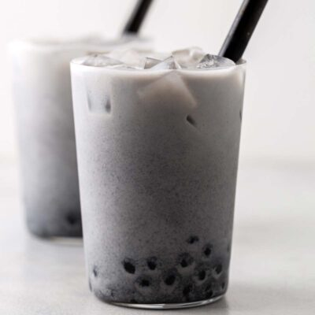

Black Sesame Boba Tea

Original recipe by Oh, How Civilized
Author: Jee Choe
Ingredients
- 2 cups water
- ¼ cup tapioca balls
- ¼ cup hot water
- 2 tablespoons black sesame paste
- ¾ cup ice
- 1 cup milk
Instructions
- Boil 2 cups of water in a saucepan and add tapioca balls. Boil water in a saucepan on the stovetop then add tapioca balls. Cook on medium-high heat for 8-10 minutes. Stir occasionally. Tapioca balls should be soft all the way through.
- Mix black sesame paste, hot water, and sugar. In a cup, add ¼ cup hot water and brown sugar to the black sesame paste. Use a handheld milk frother to whisk at low speed to combine.
- Put strained, warm tapioca balls into a cup. Add ice, sweetened black sesame, then top with milk. Serve immediately and stir before drinking. Use an extra wide straw to drink.